Blended Wing Body Cargo Aircraft
- AeroMIT's Micro Class aircraft for SAE Aero Design East 2023, which placed World Rank 4
- 2nd place, Design Report Award, Micro Class
- Blended wing body with a pi-tail, twin counter-rotating tractor motors and a steerable tricycle gear
- Carries three large payload boxes and 1.5 lb of payload plates, taking off within 8 ft
Overview
The mission was to design and build a light but sturdy radio-controlled aircraft. It had to take off within a very short field, carry heavy metal payload plates and low-density payload boxes, and fly a timed lap. Since the flight score rewards payload weight and large boxes while penalising flight time, maximising payload fraction under a fixed power limit became the team's main priority.
After comparing a conventional monoplane, a lifting body and a blended wing body (BWB), the team chose the BWB. It scored highest on the figures of merit (9.7 vs 8.1 and 7.5), thanks to its internal volume and quick payload unloading.
Specifications
| Configuration | Blended wing body, pi-tail, endplates |
|---|---|
| Wingspan | 36 in |
| Mean aerodynamic chord | 33.7 in |
| Aspect ratio / taper | 1.19 / 0.3 |
| Quarter-chord sweep | 25° |
| All-up weight (estimated) | 7.05 lb, including 2.65 lb payload |
| Stall speed | 35.94 ft/s |
| Propulsion | 2 × T-Motor MN5006 450KV, 4S 1500 mAh |
| Take-off distance | Within 8 ft |
Flight Testing
Each iteration was flown at Manipal before it went anywhere near the competition. Test flights exposed problems that analysis alone did not, and the design was updated after every session.
Aerodynamic Design
The main pod was sized around the payload and streamlined for lift and drag. The wings blend into it through a thin transition section to cut empty volume and weight. A thick flat-bottom airfoil in the pod holds the payload, while thinner high-lift airfoils on the outboard wing keep weight down. The airfoils were interpolated between sections, analysed with the vortex lattice method, and validated with CFD at their operating Reynolds numbers.
- Payload layout: chord-wise loading scored best (predicted 26.44 vs 22.21 and 18.26). It allowed motors near the root and fewer reinforcements.
- Pi-tail: keeps the stabilisers out of the pod's wake for longitudinal stability and control.
- Endplates: validated in ANSYS Fluent, they gave a 14% drag reduction and a 12.6% lift increase.
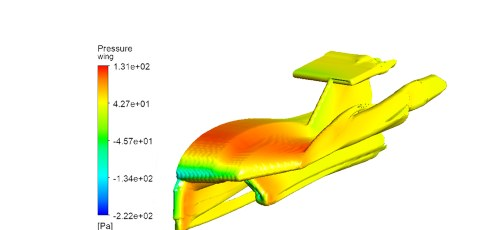
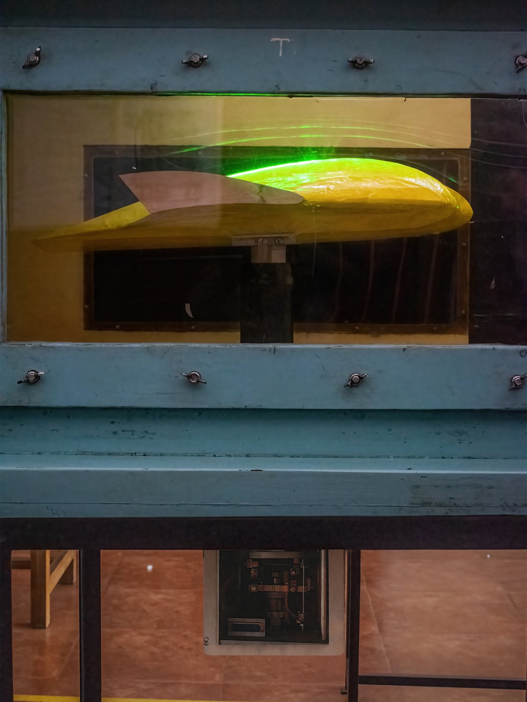
Structural Design
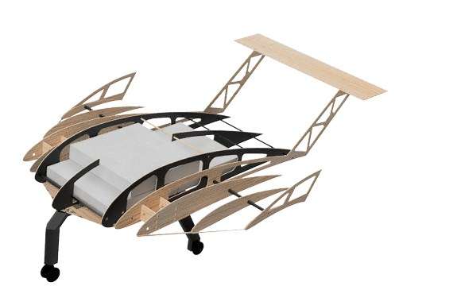
Material selection
Candidate materials went through three-point bending, torsion, impact and shear tests. Balsa scored highest overall (13.8), with carbon fibre used wherever loads demanded it.
- 10 × 10 mm pultruded carbon tubes for the motor booms, to resist motor torque
- 8 × 8 mm carbon tubes for the pod spars
- CF–balsa sandwich ribs in the pod, to take landing and payload loads
- Balsa for the rest of the airframe, covered in Monokote, with a thin carbon fibre hatch
- 3D-printed ABS for the motor mounts and control horns
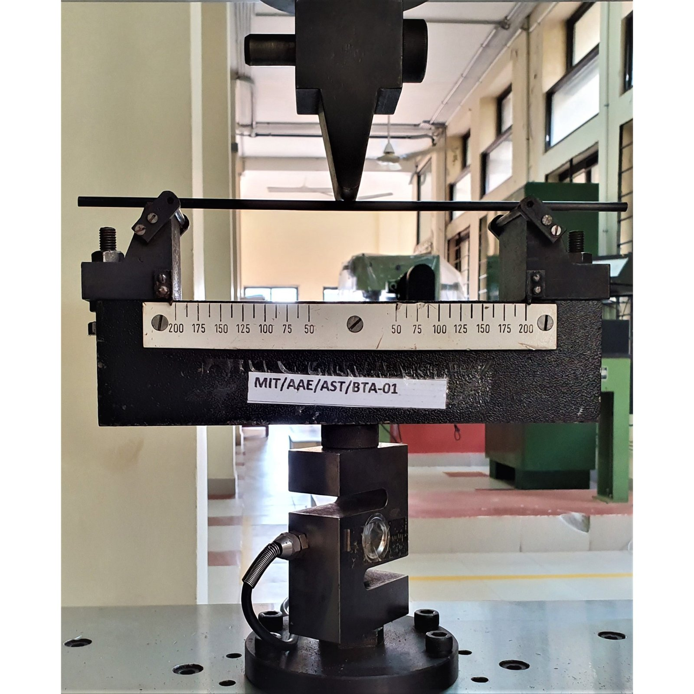
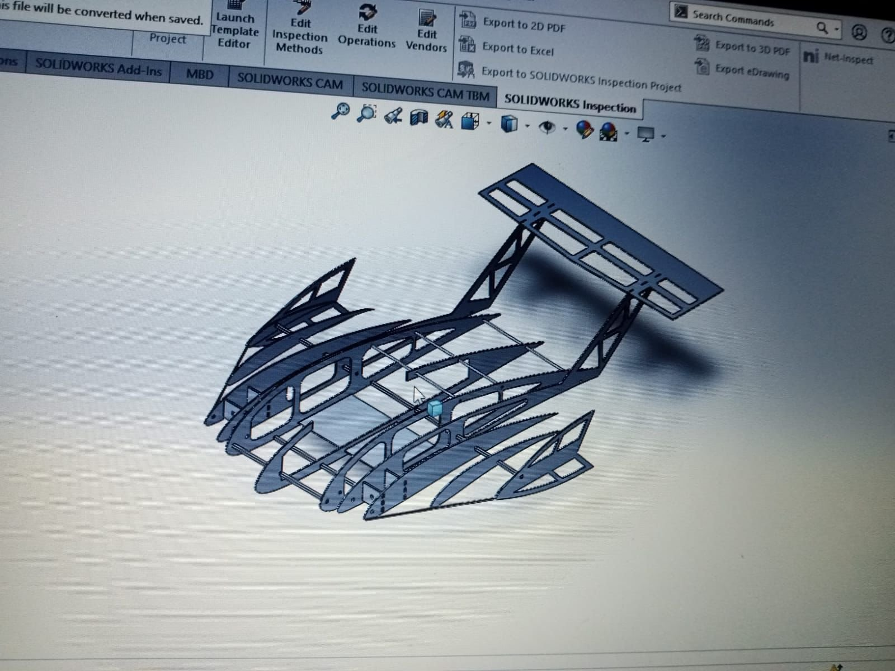
Topology optimisation
Ribs were optimised in ANSYS Static Structural for flight and landing loads, with 0.1% convergence accuracy. The resulting truss-like structure cut rib weight by 44.8% and substantially raised the strength-to-weight ratio.
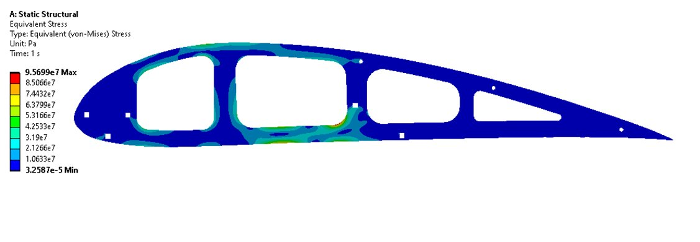
Wing deflection
The lift distribution was found with lifting-line theory, and shear force and bending moment were integrated in MATLAB to set rib spacing. The wing was then run in ANSYS with CFD pressure loads, and a static bending test with weights confirmed the model.
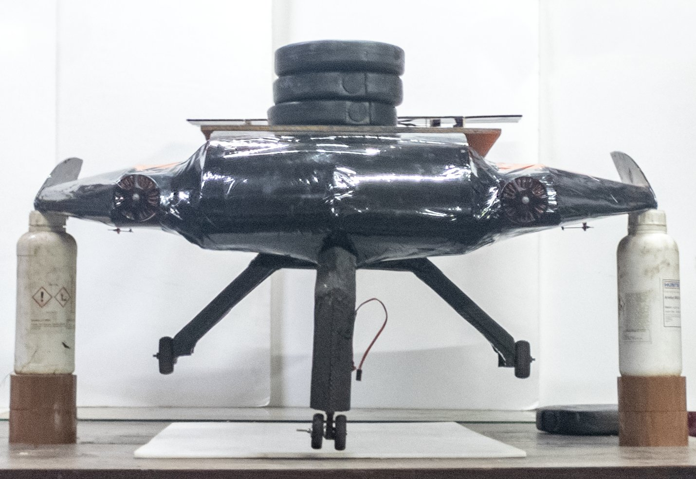
Landing Gear
The team chose a tricycle layout (FoM score 8.1), with an 18:82 nose-to-main load split verified in ANSYS. A servo-driven four-bar mechanism steers the nose gear. Impact loads were calculated with the impulse-momentum equation over a 0.3 s impact, with margin for hard landings.
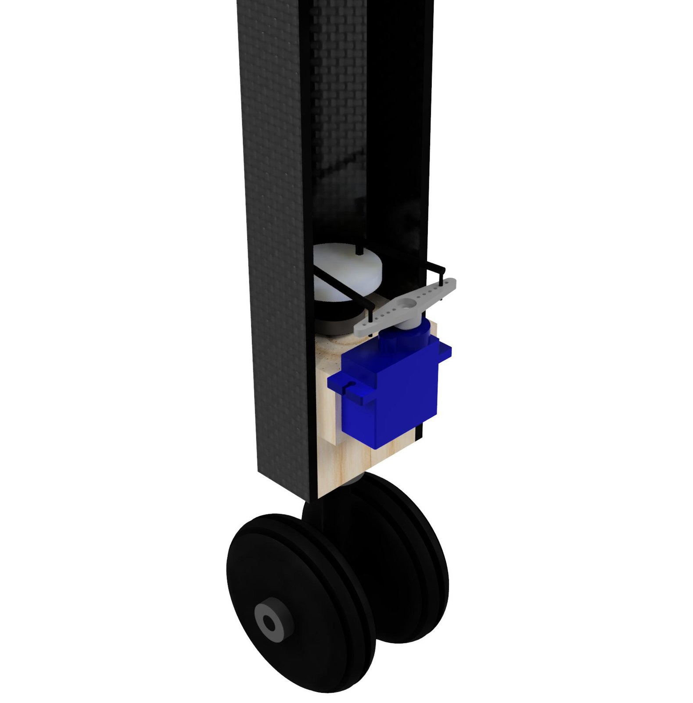
The main gear moved from aluminium to a sandwich of four layers of 160 gsm carbon fibre (0/90° and ±45°) around a 5/64 in balsa core.
| Iteration 1 | Iteration 2 | |
|---|---|---|
| Material | Aluminium alloy | CF laminate, balsa core |
| Weight | 0.54 lb | 0.44 lb |
| Strength-to-weight | 22.01 ksi/lbf | 109.8 ksi/lbf |
The result was an 18.5% weight reduction and a 398% increase in strength-to-weight ratio.
Manufacturing
Balsa parts were laser cut from CAM files for accuracy and repeatability. The CF–balsa pod panels were compression laid up, and the payload bay and gear attachment plate were hand laid up. Carbon tows were added where extra strength was needed. The swept, cambered ribs were aligned on custom supports, and every part was inspected to a ±0.25 in tolerance before assembly and Monokote covering.
The landing gear was vacuum bagged over a positive mould, cured in an autoclave, then de-moulded and machined to size.
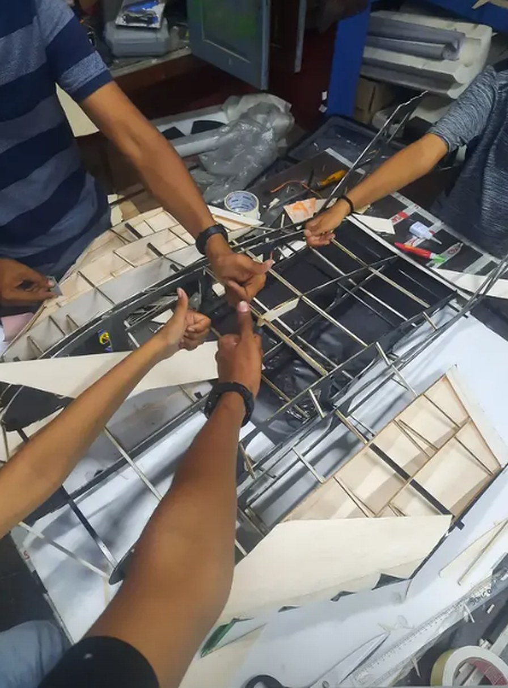
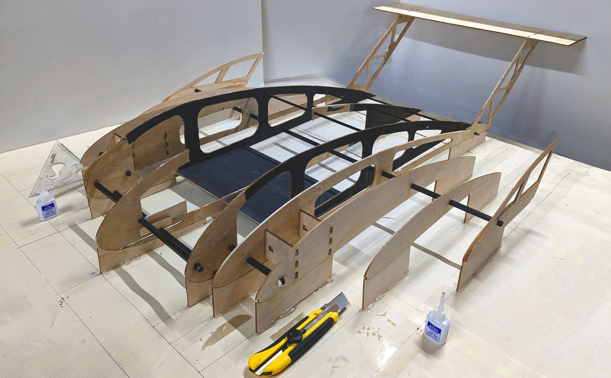
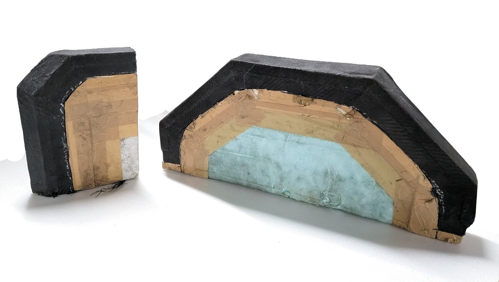
Propulsion and Electronics
The team chose dual tractor motors with outward counter-rotating propellers. Mounting the motors on the wing freed pod space for more boxes, and the propwash over the wing delays stall. Motor–propeller combinations were compared on static thrust, then dynamic thrust in the wind tunnel. The T-Motor MN5006 450KV came out best, paired with an Orange 1500 mAh 4S 100/200C battery and a T-Motor F45A 4-in-1 ESC. Servos were sized with 20% torque headroom: EMAX ES9251 on the elevator and rudder, and Orange OS90MG on the ailerons and nose gear.
Result
AeroMIT finished World Rank 4 at SAE Aero Design East 2023 in Lakeland, Florida, and won 2nd place in the Design Report Award for the Micro Class.
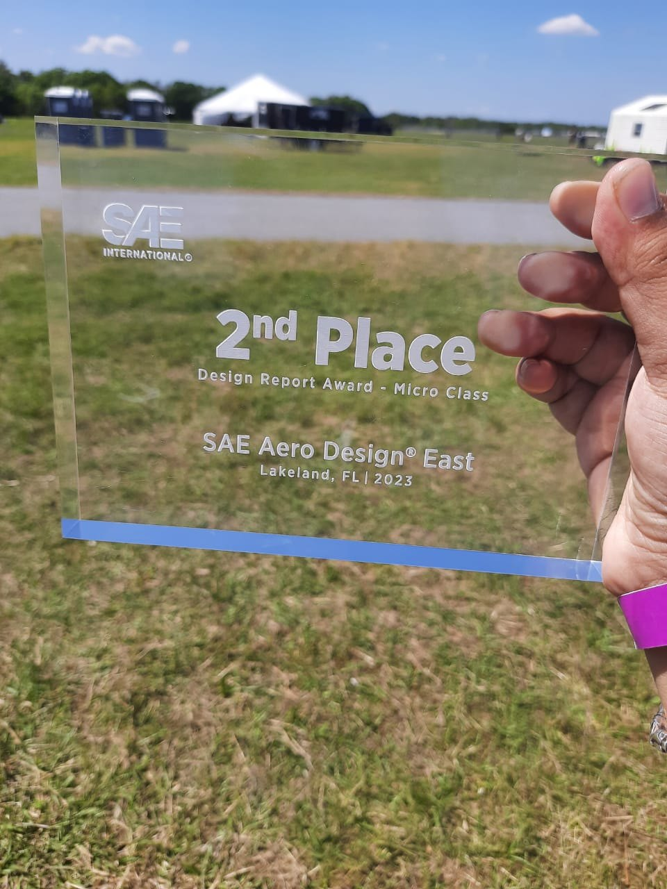